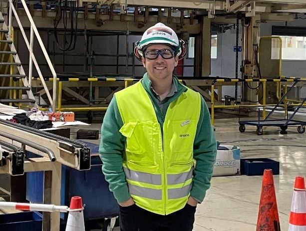

Magíster en Data Science
Universidad Adolfo Ibáñez
Titulado en octubre de 2026
Ingeniero Civil Industrial · Magíster en Data Science
Planificación industrial, análisis de datos y automatización de reportes

Profesional analítico y orientado a resultados, con alta capacidad para el manejo y análisis de datos. Aprendizaje rápido, junto con enfoque en el cumplimiento de objetivos. Excelente disposición para el trabajo en equipo.
Destacado en responsabilidad, adaptabilidad y buenas relaciones interpersonales. Mi trayectoria combina la gestión industrial en terreno (programación y paradas de planta) con análisis de datos, tableros BI y automatización de reportes.
Universidad Adolfo Ibáñez
Titulado en octubre de 2026
Universidad Técnica Federico Santa María
Valparaíso, Chile
Abierto a conocer oportunidades en análisis de datos, BI y planificación industrial.